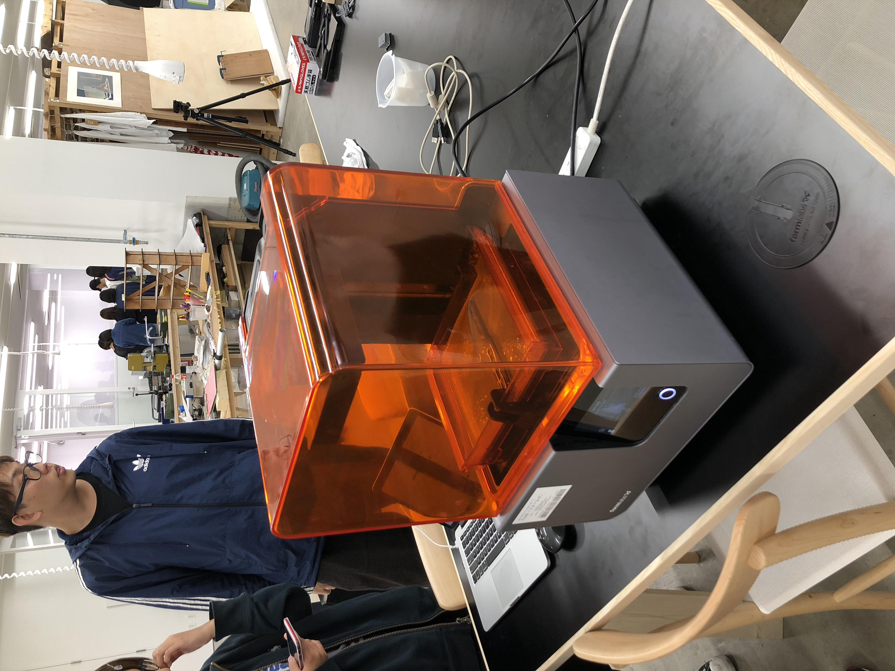

ついに念願の3Dプリンターを使うことができた。
高校時代に3Dプリンターの存在を知り、これからの人生で１回は触って見たいと思っていた。
そしたら、まさかのこんな身近に使える機会が来るとは思わなかった。
その3Dプリンターの姿がこちら・・・

これを使い、恐ろしいほどの時間をかけて小さいものを作っていた。
僕は２つのものを作ったが、それはコインとUSBのキャップだ。USBのキャップに関しては、
透明な材料で作り、透明にして見た。
これらが僕が初めて3Dプリンターで作った物たちである。
目標としては、何か機構が組んであるものの構造を調べ、一つ一つ部品を作っていき、実際に動くまで
仕上げてみたい。